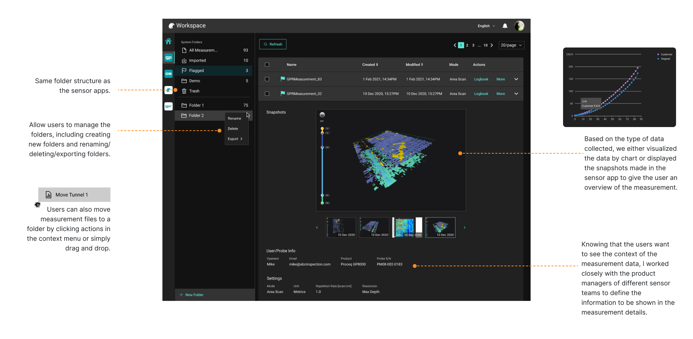
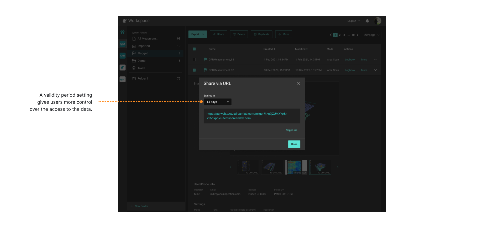

Workspace
UI/UX Design
Duration
Role
Deliverables
Challenge
Goal & Metrics
Professional & Friendly
Improve the web app to create a professional and friendly user experience;
Data Accessibility
Make the inspection data more accessible to the users and their co-workers;
Streamlined Experience
Streamline the experience for inspectors to aggregate and analyze the inspection data;
Increased Adoption
Increase the product adoption rate;
The Design Process
Discovery
Ideate
Validate
Detailed Design
Delivery
Research & Findings
User Interviews
From the discussion with the internal team, we learned there are, in general, 2 types of users: on-site workers and civil engineers.
During the recruitment, we tried to have a good mix of both types. And we found 2 on-site workers, 2 civil engineers, and 1 doing both for our user interviews. The user interviews were constructed based on the 3 main questions:
What does users’ data processing flow look like?
What information do users need during the work?
Users’ feedback on the current platform.

Findings
The findings from my research were then organized on an affinity map to better understand their relationship to each other and determine priorities moving forward in the process. With the short timeline for this project, it was vital for me to understand what I should focus on that would lead to maximum benefit to the product. After balancing the impact on both business and users, here are the 3 problems I decided to focus on:
- Difficult to access the contextual info when viewing data on a PC
- Difficult to look for data
- No access control
- No integration with post-processing tools
Persona
To help communicate information about users that I collected during research, I created a provisional persona.
Feedback on Current Platform
Ideation
Competitive Analysis
Based on users' input and the business requirement, we decided to redesign the landing page of Workspace. We hope the new landing page makes it easier to access measurements, encourages users in their daily work, and provides the latest business updates to the users.
Though we didn't find any direct competitors of the Workspace, a few indirect competitors with a similar philosophy to the Workspace were identified. The analysis was focused on the landing page and the information architecture design.
Sketches
Based on the established pain points, I sketched multiple options to test and see how to optimize the user experience by initiating minimal changes. During the process of redesign, I continued referring to the target audience, project vision, and my goal to focus on how to improve the user experience rather than making design changes.

Validation
After a few rounds of iterations, I came to a good place with the solutions. A clickable prototype was created to test my ideas and validate the redesign. It was extremely helpful for me to test users on the tasks I focused on to gain realistic insights and understand what worked well and what required further improvement. I conducted 3 remote, moderated Think Aloud tests over Zoom. I tested around the key tasks I identified with the product manager.

SEQ & SUS
An SEQ rating followed each task. To understand the overall feeling, I also added a SUS survey at the end of the test and had a short discussion with the tester.
81.67
Average SUS score5.83
Average SEQ score of 6 tasks, the 6 tasks hover an average score from 4.67 to 7(nominal midpoint of 4)
Final Design
Homepage

Data View
Data View (Sharing)
Delivery
Design System
Workspace is aimed to become a platform that streamlines users' data processing flow from managing data to post-processing. This would require Workspace to onboard more cloud-based services. Together with another UI designer, I created a design system to guide the design of upcoming products and give users a consistent experience.
The design system contains not only essential visual elements, like color, typography, and icons but also components and best practices guidelines. Find our guidelines here.
Measuring UX
We adopted Google's Heart framework to measure the new design's overall experience. The framework helps us define metrics to track the adoption rate of the products as well as other crucial metrics. And with this information, we will be able to continue monitoring the product's performance.
| Goal | Signals | Metrics | |
|---|---|---|---|
| Happiness | Users find the site helpful and easy to use | Responding to surveys | Net Promoter Score |
| Engagement | Users keep discovering new content/features | Spending more time on the site, Viewing content not related to measurement data |
Average session length, # of page view of non-measurement screens |
| Adoption | Users see the value of the site | Signing up for an account | Registeration rate |
| Retention | Users keep coming back to the site to complete a key action | Staying active in the site | Daily active users |
| Task Success | Users complete their goals quickly and easily | Completing the task without error, | # of error event, Time to share/export |
After Thoughts
This project has been a challenging and rewarding experience for me. In the beginning, I was overwhelmed by the board vision from the business side and took the product manager role as there wasn't one at the beginning. However, it turned out to be a fantastic experience to understand users and find out what makes the tick.
Although I had a short timeline for this project, I am glad to learn how it came out. We are able to yield big impacts and create a great experience for users. The continually increased adoption rate is also strong evidence to support us. The older cloud platform only got less than 200 registers (including internal users), and we got 313 new registers (purely external users) in the first week after releasing the new design and over 3k registers in the first month. 🎉